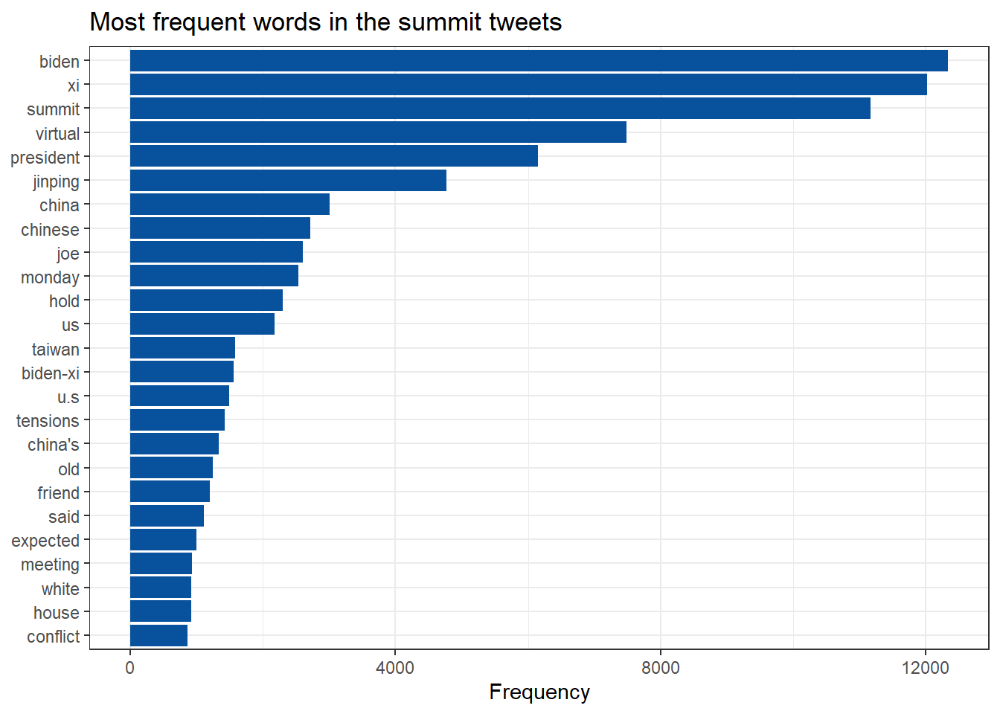
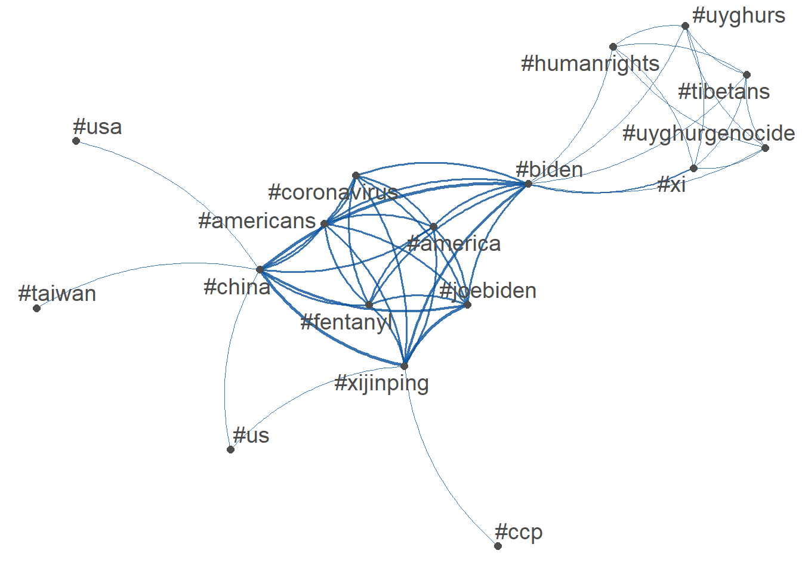
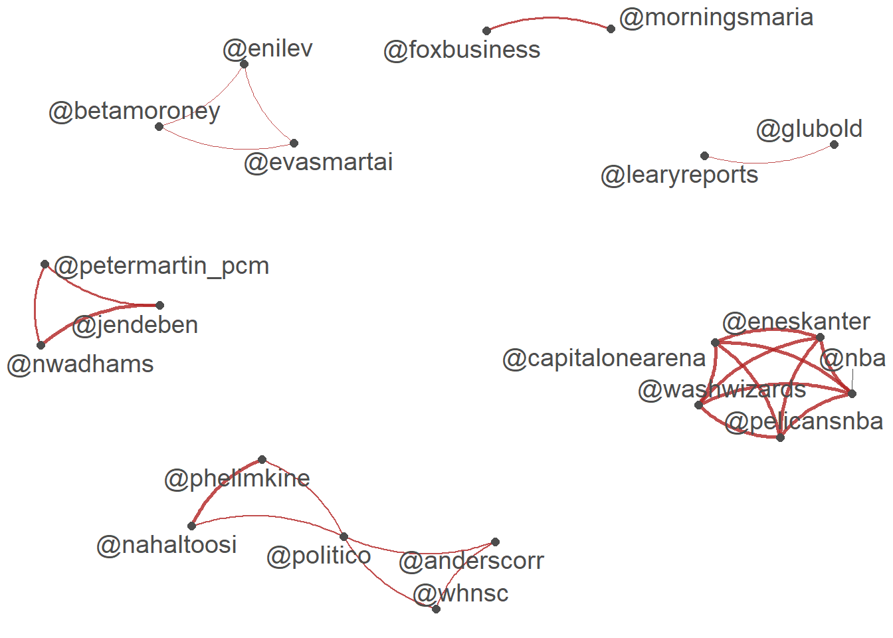
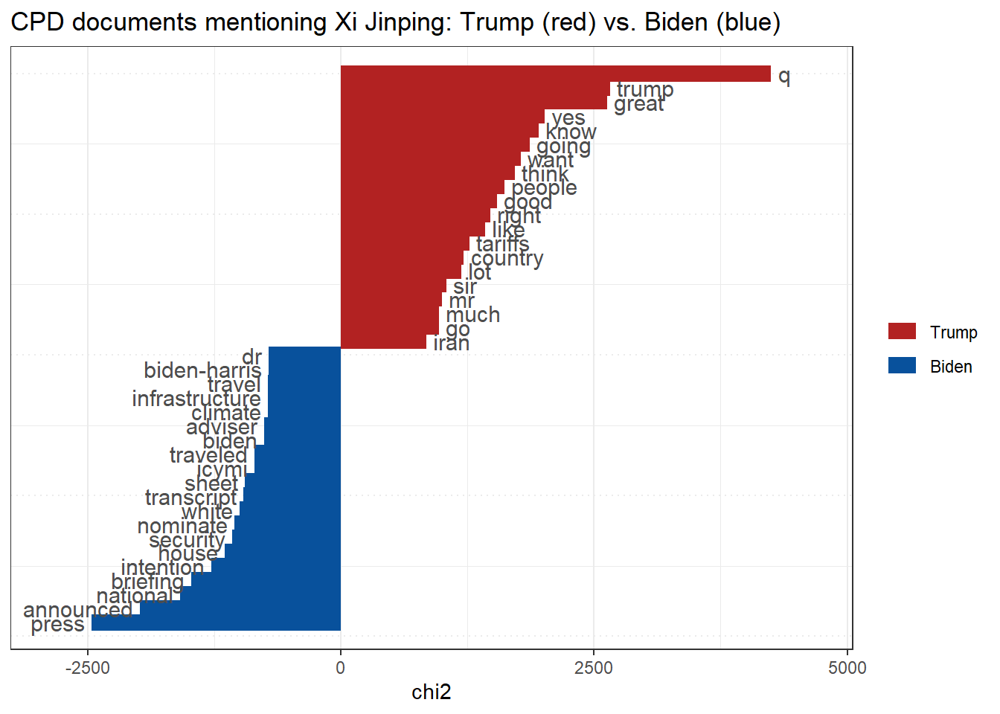
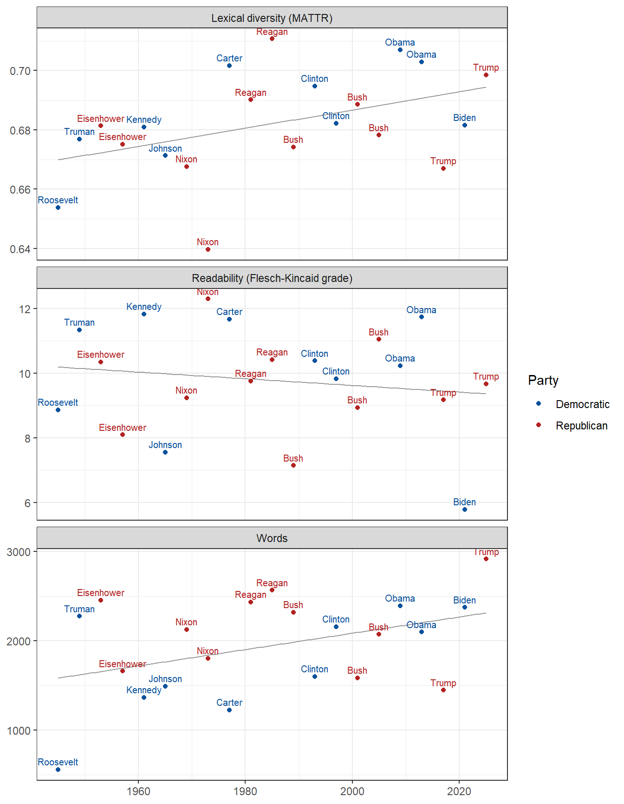
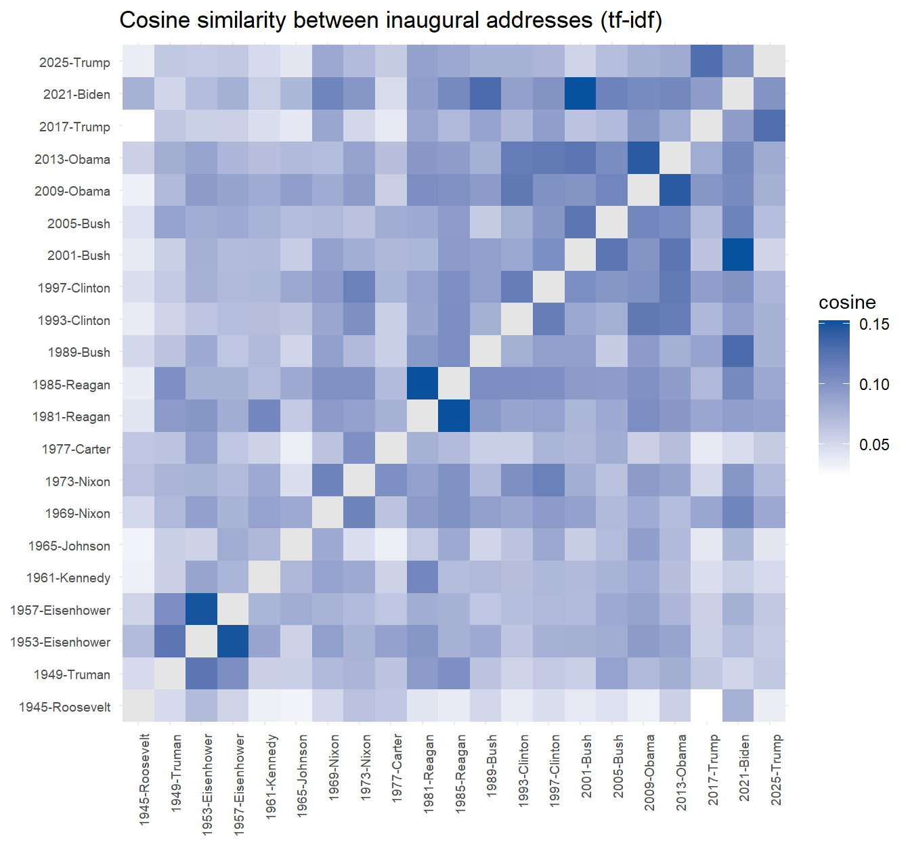
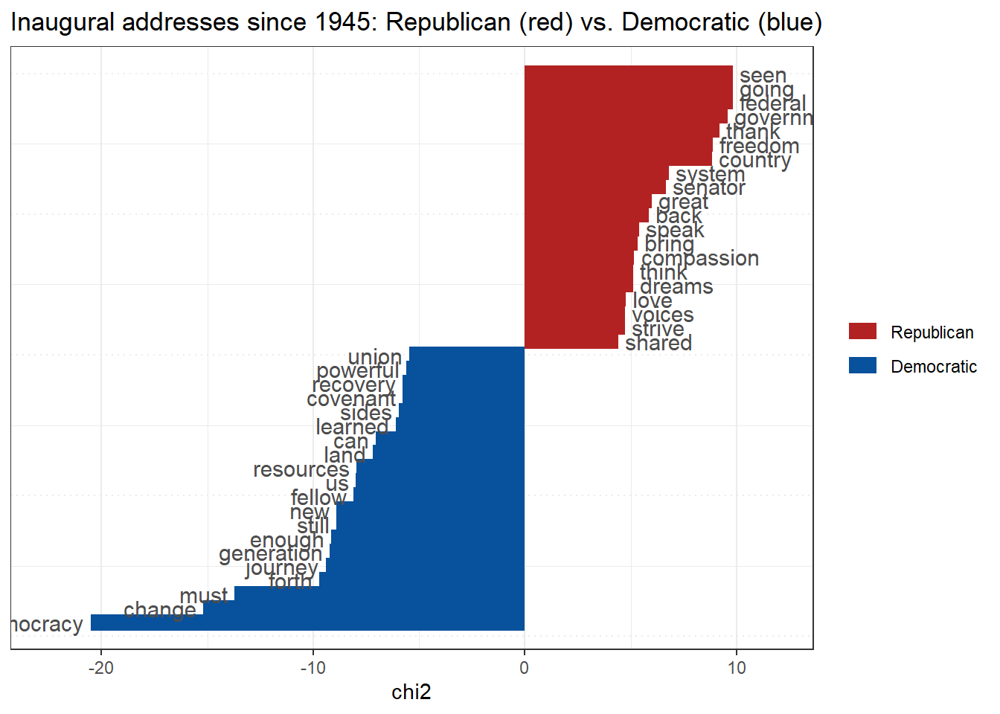
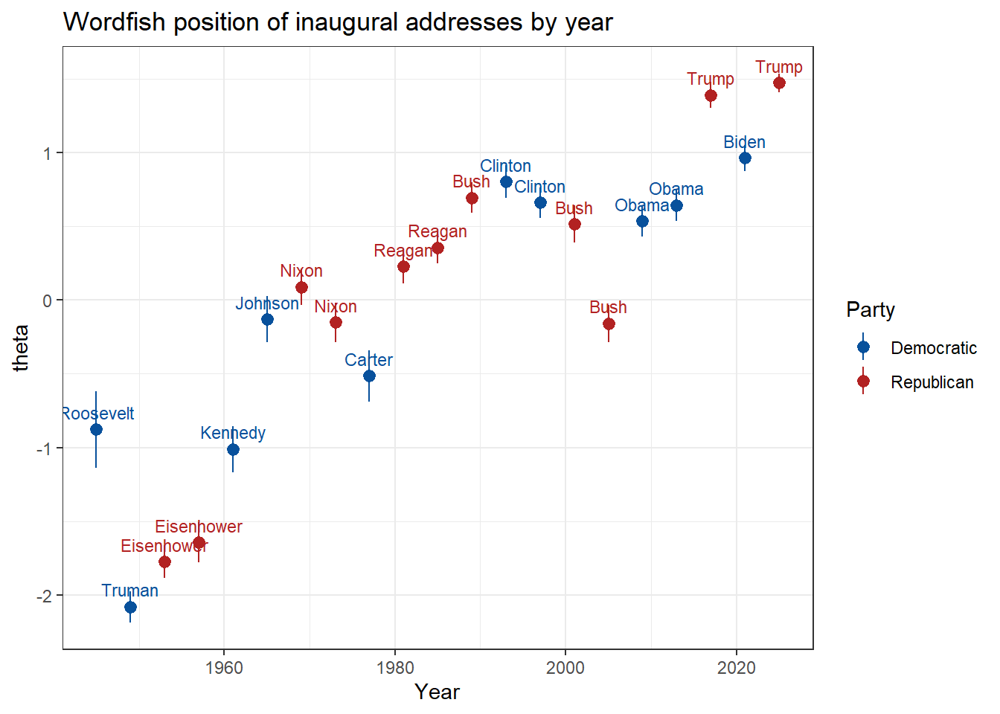
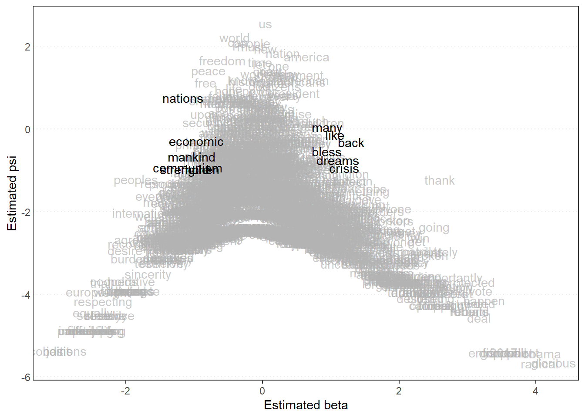

# Install once in the Console (not here):
# install.packages(c("quanteda", "quanteda.textstats", "quanteda.textplots",
# "quanteda.textmodels", "tidyverse", "httr2", "rvest", "here"))
library(quanteda) # corpus, tokens, dfm, kwic
library(quanteda.textstats) # frequency, keyness, lexical diversity, readability, similarity
library(quanteda.textplots) # network, keyness and Wordfish plots
library(quanteda.textmodels) # LSA and Wordfish
library(tidyverse) # read_csv, dplyr, tidyr, purrr, ggplot2
library(httr2) # GovInfo API (as in Assignment 5)
library(rvest) # downloaded HTML -> plain text
# >>> API KEY: read from .Renviron (see the box above). Do NOT paste the key here.
govinfo_key <- Sys.getenv("GOVINFO_API_KEY")
has_key <- nzchar(govinfo_key) # TRUE if the key was found
kv <- function(x) if (has_key) x else "*[shown after rendering with the API key]*"
raw_dir <- here::here("data-raw", "cpd_xi") # in .gitignore: the documents stay local
log_dir <- here::here("logs") # published: log and manifest (4a)
dir.create(raw_dir, recursive = TRUE, showWarnings = FALSE)
dir.create(log_dir, showWarnings = FALSE)
# Words with no meaning here ("s" and "u" are leftovers of "U.S." without punctuation)
my_stop <- c(stopwords("en"), "amp", "rt", "can", "will", "also", "just", "s", "u")
party_cols <- c(Democratic = "#08519c", Republican = "firebrick")0 Set up
Setting up packages and API Key
1. Read
quanteda — https://quanteda.io, and the tutorials at https://tutorials.quanteda.io, ch. 1–4 and 6.
The basic quanteda workflow used throughout this page:
| Object | What it is | Function |
|---|---|---|
| corpus | the texts plus their variables (date, party, …) | corpus() |
| tokens | each text split into words | tokens() |
| dfm | document-feature matrix: one row per text, one column per word, cells = counts | dfm() |
| fcm | feature co-occurrence matrix: how often two words appear in the same text | fcm() |
2. Analyze
2a. One summit, two kinds of text
2a(i). The public: tweets
Reading the archived tweets and describ them in four ways: (1) the most frequent words, (2) which hashtags appear together, (3) which accounts are mentioned together, (4) a Latent Semantic Analysis (LSA).
(1) Frequency
summit <- read_csv(
"https://raw.githubusercontent.com/datageneration/datamethods/master/textanalytics/summit_11162021.csv",
show_col_types = FALSE)
c(tweets = nrow(summit), share_retweets = mean(summit$is_retweet)) tweets share_retweets
1.452000e+04 6.222452e-01 # corpus -> tokens -> dfm (keeps #hashtags and @mentions for the networks)
twt_dfm <- summit |>
corpus(text_field = "text") |>
tokens(remove_punct = TRUE, remove_url = TRUE, remove_symbols = TRUE, remove_numbers = TRUE) |>
dfm()
# (1) Frequent words: ordinary words only (no stop words, hashtags or mentions)
twt_words <- dfm_remove(twt_dfm, c(my_stop, "#*", "@*"))
twt_freq <- textstat_frequency(twt_words, n = 25)
ggplot(twt_freq, aes(frequency, reorder(feature, frequency))) +
geom_col(fill = "#08519c") +
labs(title = "Most frequent words in the summit tweets", x = "Frequency", y = NULL) +
theme_bw()
(2) and (3) Networks.
# Network of the 50 most used features that match a pattern ("#*" or "@*")
plot_net <- function(pattern, min_freq, colour) {
d <- dfm_select(twt_dfm, pattern)
top <- names(topfeatures(d, 50))
print(head(top, 10)) # the most used ones
fcm(d) |>
fcm_select(top) |>
textplot_network(min_freq = min_freq, edge_color = colour, edge_alpha = 0.8, edge_size = 1)
}
plot_net("#*", min_freq = 50, colour = "#08519c") # (2) hashtags used in the same tweet [1] "#china" "#biden" "#xijinping" "#joebiden" "#america"
[6] "#americans" "#coronavirus" "#fentanyl" "#xi" "#us" 
plot_net("@*", min_freq = 20, colour = "firebrick") # (3) accounts mentioned in the same tweet [1] "@potus" "@politico" "@joebiden" "@jendeben" "@eneskanter"
[6] "@nwadhams" "@phelimkine" "@nahaltoosi" "@nba" "@washwizards"
(4) Latent Semantic Analysis.
twt_lsa <- textmodel_lsa(twt_words, nd = 4)
# The 10 words with the largest loading (in absolute value) on each dimension
top10 <- apply(abs(twt_lsa$features), 2, \(x) paste(names(sort(x, decreasing = TRUE))[1:10], collapse = ", "))
data.frame(dimension = 1:4, top_words = top10) dimension
1 1
2 2
3 3
4 4
top_words
1 biden, xi, summit, virtual, president, jinping, chinese, joe, monday, hold
2 president, biden, jinping, xi, chinese, virtual, monday, know, russia, ukraine
3 president, summit, virtual, biden, biden-xi, jinping, said, chinese, know, russia
4 said, old, friend, know, russia, ukraine, summit, xi, china, candidInterpreting 2a(i).
The 14,520 tweets (62% of them retweets) are dominated by the names of the two leaders and the format of the event: the most frequent words are biden, xi, summit, virtual, president, jinping, china, chinese. The hashtag network shows two clusters: one around the leaders and the bilateral agenda (#china, #biden, #xijinping, #fentanyl, #coronavirus, #taiwan) and one around human rights (#uyghurgenocide, #tibetans, #humanrights), which the official agenda barely names. The mention network links official and media accounts (@potus, @joebiden, @politico, journalists) and also a separate cluster formed by basketball player Enes Kanter and NBA accounts, a protest against China that happened in the same days. The first LSA dimension simply collects the general summit vocabulary; the others pick up narrower threads, such as Xi calling Biden an “old friend” and references to Russia and Ukraine. Because many tweets are retweets, frequent words partly reflect a few messages copied many times.
2a(ii). The government: Compilation of Presidential Documents
- searching GovInfo for all CPD documents that contain “Xi Jinping” since Biden’s inauguration and downloadig them, keeping a log and a manifest; (2) read every mention of Xi with the words around it (
kwic()); (3) use keyness to find the words that distinguish the Biden documents from the Trump documents.
Step 1. Collect. Search, download (with a log), convert to text, and write the manifest. GovInfo returns results in pages of 100, so the search function keeps asking for the next page while pages come back full. Documents are saved in data-raw/ (ignored by Git); each one is assigned to an administration by its date (Trump from 20 January 2025).
# Search GovInfo, following every page of results
search_govinfo <- function(query) {
out <- list(); offset <- "*" # "*" = first page
while (!is.null(offset)) {
res <- request("https://api.govinfo.gov/search") |>
req_url_query(api_key = govinfo_key) |> # >>> API KEY (from .Renviron)
req_body_json(list(query = query, pageSize = 100, offsetMark = offset)) |>
req_perform() |>
resp_body_json()
out <- c(out, res$results)
offset <- if (length(res$results) == 100) res$offsetMark else NULL # next page, if any
}
tibble(package_id = map_chr(out, "packageId"),
title = map_chr(out, "title"),
date = as.Date(map_chr(out, "dateIssued")))
}
# The query: CPD collection + exact phrase in the full text + from 20 Jan 2021 to today
cpd_query <- sprintf('collection:(CPD) AND "Xi Jinping" AND publishdate:range(2021-01-20,%s)', Sys.Date())
cpd <- search_govinfo(cpd_query) |>
filter(date >= as.Date("2021-01-20")) |>
mutate(file = file.path(raw_dir, paste0(package_id, ".htm")),
url = paste0("https://api.govinfo.gov/packages/", package_id, "/htm"))
n_found <- nrow(cpd)
# Download each document (skipped if already on disk); a failure is logged, not fatal
cpd$status <- map2_chr(cpd$url, cpd$file, \(url, file) {
if (file.exists(file)) return("already downloaded")
Sys.sleep(0.5) # be polite to the API
tryCatch({
request(url) |> req_url_query(api_key = govinfo_key) |> req_perform(path = file) # >>> API KEY
"ok"
}, error = \(e) paste("failed:", conditionMessage(e)))
})
n_failed <- sum(grepl("failed", cpd$status))
write_csv(transmute(cpd, package_id, url, status, time = Sys.time()), # log (URL without the key)
file.path(log_dir, "cpd_xi_download_log.csv"))
# Plain text + administration, then the manifest (published; the documents are not)
cpd <- cpd |>
filter(file.exists(file)) |>
mutate(text = map_chr(file, \(f) html_text2(read_html(f))),
admin = if_else(date >= as.Date("2025-01-20"), "Trump", "Biden"))
write_csv(transmute(cpd, package_id, title, date, admin, n_chars = nchar(text),
source = paste0("https://www.govinfo.gov/app/details/", package_id)),
file.path(log_dir, "cpd_xi_manifest.csv"))
count(cpd, admin)# A tibble: 2 × 2
admin n
<chr> <int>
1 Biden 183
2 Trump 168cpd_toks <- corpus(cpd, docid_field = "package_id", text_field = "text") |>
tokens(remove_punct = TRUE, remove_numbers = TRUE, remove_symbols = TRUE)Step 2. Xi in context. kwic() (keyword in context) shows each mention with the 8 words before and after it.
xi_kwic <- kwic(cpd_toks, phrase("Xi Jinping"), window = 8)
write_csv(as.data.frame(xi_kwic), file.path(log_dir, "cpd_xi_kwic.csv"))
head(as.data.frame(xi_kwic)[, c("docname", "pre", "keyword", "post")], 15) docname pre
1 DCPD-2026DIGEST the President had a telephone conversation with President
2 DCPD-2026DIGEST President announced that he will meet with President
3 DCPD-2026DIGEST announced that the President will meet with President
4 DCPD-2026DIGEST the People where he was greeted by President
5 DCPD-2026DIGEST government complex where he was greeted by President
6 DCPD-2026DIGEST House announced that the President will welcome President
7 DCPD-2026DIGEST House announced that the President will welcome President
8 DCPD-2026DIGEST announced further details on the visit of President
9 DCPD-2026DIGEST Trump participated in an arrival ceremony for President
10 DCPD-2026DIGEST Portico the President and Mrs Trump greeted President
11 DCPD-2026DIGEST Portico the President and Mrs Trump greeted President
12 DCPD-2026DIGEST Portico the President and Mrs Trump greeted President
13 DCPD-2026DIGEST Chris Woods Eldrick T Tiger Wright Christopher A
14 DCPD-2026CHECKLIST Hosts a Historic State Visit With China's President
15 DCPD-202600653 House In his remarks he referred to President
keyword post
1 Xi Jinping of China to discuss trade and military issues
2 Xi Jinping of China in Beijing China on May and
3 Xi Jinping of China in Beijing China on May and
4 Xi Jinping of China and participated in an arrival ceremony
5 Xi Jinping of China and they walked the grounds and
6 Xi Jinping of China in an official arrival ceremony at
7 Xi Jinping of China at the National Archives and Records
8 Xi Jinping of China and his wife Peng Liyuan on
9 Xi Jinping of China and his wife Peng Liyuan 89th
10 Xi Jinping of China and his wife Peng Liyuan and
11 Xi Jinping of China and his wife Peng Liyuan The
12 Xi Jinping of China and his wife Peng Liyuan and
13 Xi Jinping Xie Feng Yared Pierre Yılmaz Cevdet Yingst Trey
14 Xi Jinping Signs a Historic Arctic Security Agreement Secures Four
15 Xi Jinping of China A reporter referred to Dario Amodei# Mentions per administration
table(admin = docvars(cpd_toks, "admin")[match(xi_kwic$docname, docnames(cpd_toks))])admin
Biden Trump
465 267 Step 3. Keyness. Keyness compares the relative frequency of every word in a target group with a reference group (chi-square test). Large positive values are typical of the target (Trump); large negative values are typical of the reference (Biden).
cpd_dfm <- cpd_toks |> tokens_remove(my_stop) |> dfm() |> dfm_trim(min_termfreq = 3)
cpd_key <- textstat_keyness(dfm_group(cpd_dfm, admin), target = "Trump")
textplot_keyness(cpd_key, n = 20, color = c("firebrick", "#08519c")) +
labs(title = "CPD documents mentioning Xi Jinping: Trump (red) vs. Biden (blue)")
Interpretation 2a(ii).
The query returned 351 documents, 183 from the Biden administration and 168 from the Trump administration, with 732 mentions of Xi Jinping in total. The words most typical of the Trump documents are q, trump, great, yes, know, going, want, think, people, good; the words most typical of the Biden documents are press, announced, national, briefing, intention, house, security, nominate, white, transcript.
NoteTo complete after rendering with the key
Read the kwic table and the keyness plot and add two or three sentences here: in what situations is Xi mentioned (calls, meetings, joint statements, remarks to the press), and what the keyness words say about how each administration framed China (for example security and alliances versus trade and deals). Remember that the two periods have different lengths, so compare relative frequencies, not counts.
2a(iii). Compare the two sources
cpd_nov21 <- dfm_subset(cpd_dfm, date >= as.Date("2021-11-01") & date <= as.Date("2021-11-30"))
tibble(rank = 1:20,
tweets = names(topfeatures(twt_words, 20)),
government = names(topfeatures(cpd_nov21, 20))[1:20])# A tibble: 20 × 3
rank tweets government
<int> <chr> <chr>
1 1 biden going
2 2 xi president
3 3 summit know
4 4 virtual thank
5 5 president one
6 6 jinping people
7 7 china world
8 8 chinese america
9 9 joe back
10 10 monday think
11 11 hold get
12 12 us new
13 13 taiwan law
14 14 biden-xi infrastructure
15 15 u.s laughter
16 16 tensions efforts
17 17 china's now
18 18 old well
19 19 friend look
20 20 said jobs Interpreting 2a(iii).
| Tweets (Part 1) | Presidential documents (Part 2) | |
|---|---|---|
| Who produced them | thousands of users: citizens, journalists, activists, media and official accounts | the White House; selected and published by the Office of the Federal Register |
| For whom | followers and the online public | the public record, the press, foreign governments |
| Selection | a keyword and a collection window of a few days | editors’ choice of what enters the CPD, then our query |
| What they let us say | what the public paid attention to and how it framed the summit (leaders, human rights, side controversies) during two days | the official agenda and wording, and how it changed over four years and across two administrations |
| What they do not let us say | public opinion in general (users are not a sample of the population; retweets repeat a few messages) | what was said in private; issues the White House chose not to put in writing |
About the summit, the tweets show the event as it was received: attention to the two leaders, to the virtual format, and to issues the official record barely names, such as the Uyghurs and Tibet. The presidential documents show the event as the government wanted it recorded, and only they allow a comparison over time, here between the Biden and Trump administrations. Each source answers a different question; neither is “the truth” about US–China relations.
2a(iv). Optional: YouTube comments on the Trump–Xi meeting in Busan
For a public counterpart in 2025, collect YouTube comments on news coverage of the Trump–Xi meeting in Busan (30 October 2025) with your YouTube key, and compare with (i).
Not done (optional). It would use the YouTube Data API v3 with a YOUTUBE_API_KEY line in .Renviron: search to find the most viewed news videos about the meeting, commentThreads to download their comments, and then the same steps as in 2a(i).
2b. US presidential inaugural addresses, 1945 onward
2b(i). Similarities and differences
Any similarities and differences over time and among presidents? Use length, lexical diversity, readability, cosine similarity, and keyness by party.
Using the inaugural corpus that comes with quanteda, keep the addresses from 1945 on, and compare them with five measures. The first three are computed together:
- Length: number of words.
- Lexical diversity: how varied the vocabulary is. The type-token ratio (TTR = different words / total words) falls automatically as a text gets longer, so the moving-average TTR (MATTR, over windows of 100 words) is used to compare addresses of different lengths.
- Readability: Flesch Reading Ease (higher = easier) and Flesch–Kincaid grade level (the US school grade needed to follow the text), both based on sentence length and syllables per word.
inaug <- corpus_subset(data_corpus_inaugural, Year >= 1945) # addresses since 1945
inaug_toks <- tokens(inaug, remove_punct = TRUE)
inaug_dfm <- inaug_toks |> tokens_remove(stopwords("en")) |> dfm()
# One row per address: length, lexical diversity, readability
inaug_info <- docvars(inaug) |>
mutate(doc = docnames(inaug), n_tokens = ntoken(inaug_toks)) |>
left_join(textstat_lexdiv(inaug_toks, c("TTR", "MATTR"), MATTR_window = 100),
by = c("doc" = "document")) |>
left_join(textstat_readability(inaug, c("Flesch", "Flesch.Kincaid")),
by = c("doc" = "document"))
# The three measures over time, one panel each (grey line = overall trend)
inaug_info |>
select(Year, President, Party, Words = n_tokens, `Lexical diversity (MATTR)` = MATTR,
`Readability (Flesch-Kincaid grade)` = Flesch.Kincaid) |>
pivot_longer(-c(Year, President, Party)) |>
ggplot(aes(Year, value)) +
geom_smooth(method = "lm", formula = y ~ x, se = FALSE, colour = "grey60", linewidth = 0.5) +
geom_point(aes(colour = Party)) +
geom_text(aes(label = President, colour = Party), vjust = -0.6, size = 2.6, show.legend = FALSE) +
facet_wrap(~ name, ncol = 1, scales = "free_y") +
scale_colour_manual(values = party_cols) +
labs(x = NULL, y = NULL) + theme_bw()
inaug_info |>
select(Year, President, Party, n_tokens, TTR, MATTR, Flesch, Flesch.Kincaid) |>
mutate(across(TTR:Flesch.Kincaid, \(x) round(x, 2))) Year President Party n_tokens TTR MATTR Flesch Flesch.Kincaid
1 1945 Roosevelt Democratic 557 0.46 0.65 68.38 8.87
2 1949 Truman Democratic 2272 0.33 0.68 48.79 11.34
3 1953 Eisenhower Republican 2454 0.35 0.68 57.70 10.34
4 1957 Eisenhower Republican 1659 0.35 0.68 69.16 8.09
5 1961 Kennedy Democratic 1366 0.39 0.68 57.12 11.82
6 1965 Johnson Democratic 1489 0.35 0.67 69.41 7.56
7 1969 Nixon Republican 2124 0.33 0.67 65.58 9.24
8 1973 Nixon Republican 1802 0.28 0.64 54.19 12.30
9 1977 Carter Democratic 1224 0.40 0.70 53.38 11.67
10 1981 Reagan Republican 2432 0.35 0.69 58.75 9.76
11 1985 Reagan Republican 2564 0.34 0.71 57.58 10.42
12 1989 Bush Republican 2317 0.32 0.67 73.10 7.15
13 1993 Clinton Democratic 1598 0.38 0.69 55.81 10.38
14 1997 Clinton Democratic 2157 0.33 0.68 59.22 9.83
15 2001 Bush Republican 1584 0.37 0.69 60.12 8.93
16 2005 Bush Republican 2071 0.35 0.68 53.19 11.04
17 2009 Obama Democratic 2390 0.37 0.71 60.53 10.23
18 2013 Obama Democratic 2097 0.37 0.70 53.56 11.73
19 2017 Trump Republican 1445 0.37 0.67 58.58 9.17
20 2021 Biden Democratic 2372 0.31 0.68 73.20 5.78
21 2025 Trump Republican 2913 0.32 0.70 55.08 9.67Cosine similarity: each address is a vector of word counts; the cosine of the angle between two vectors is 1 when the word use is identical and 0 when the two texts share no words. Words are weighted by tf-idf so that words every address uses (“nation”, “people”) count less.
sim <- textstat_simil(dfm_tfidf(inaug_dfm), method = "cosine")
sim_mat <- as.matrix(sim)
diag(sim_mat) <- NA # an address compared with itself (= 1) would flatten the colours
as.data.frame(as.table(sim_mat)) |>
ggplot(aes(Var1, Var2, fill = Freq)) +
geom_tile() +
scale_fill_gradient(low = "white", high = "#08519c", name = "cosine", na.value = "grey90") +
labs(title = "Cosine similarity between inaugural addresses (tf-idf)", x = NULL, y = NULL) +
theme_minimal() +
theme(axis.text.x = element_text(angle = 90, hjust = 1, size = 7), axis.text.y = element_text(size = 7))
top_pairs <- as.data.frame(sim) |> arrange(desc(cosine)) |> head(10) # most similar pairs
top_pairs document1 document2 cosine
1 2001-Bush 2021-Biden 0.1524977
2 1981-Reagan 1985-Reagan 0.1523252
3 1953-Eisenhower 1957-Eisenhower 0.1500340
4 2009-Obama 2013-Obama 0.1450932
5 1989-Bush 2021-Biden 0.1305581
6 2017-Trump 2025-Trump 0.1276016
7 2001-Bush 2005-Bush 0.1224350
8 2001-Bush 2013-Obama 0.1221012
9 1949-Truman 1953-Eisenhower 0.1217490
10 1993-Clinton 2009-Obama 0.1195455Keyness by party: words used unusually often by Republican presidents (target, red) compared with Democratic presidents (reference, blue).
party_key <- textstat_keyness(dfm_group(inaug_dfm, Party), target = "Republican")
textplot_keyness(party_key, n = 20, color = c("firebrick", "#08519c")) +
labs(title = "Inaugural addresses since 1945: Republican (red) vs. Democratic (blue)")
Comments on 2b(i).
- Length. Addresses range from 557 words (Roosevelt, 1945, a wartime fourth inauguration) to 2,913 words (Trump, 2025). The fitted line rises slightly over time, but it is pulled down by Roosevelt’s very short wartime address; there is no clear party difference, and length depends more on the president and the moment.
- Lexical diversity. The simple TTR is misleading, because it is highest for the shortest address. Once length is corrected with MATTR, the differences are small (roughly between 0.64 and 0.71): presidents differ little in vocabulary richness in this genre.
- Readability. Most addresses require between a 7th- and a 12th-grade reading level. The trend over time is weak (the fitted line changes by about -0.1 grades per decade), and the differences come mostly from individual presidents: the easiest address to read is Biden 2021 (grade 5.8), well below all the others, while the hardest is Nixon 1973 (grade 12.3).
- Cosine similarity. The most similar pair is 2001-Bush and 2021-Biden, and 5 of the 10 most similar pairs are two addresses by the same president. A president’s vocabulary carries over from the first to the second term; the other close pairs mix parties (for example Bush 2001 and Biden 2021), so similarity does not follow party lines. Overall the cosines are low, because each address is written for its own moment.
- Keyness by party. The words that distinguish Republicans are federal, going, seen, government, thank, freedom, country, system; Democrats are distinguished by democracy, change, must, forth, journey, generation, enough, still. The differences are modest (small chi-square values): the ceremonial genre pushes both parties toward the same language.
2b(ii). Is the 2025 address in the corpus?
tail(docvars(data_corpus_inaugural)[, c("Year", "President", "Party")], 3) Year President Party
58 2017 Trump Republican
59 2021 Biden Democratic
60 2025 Trump Republicanlatest_year <- max(docvars(data_corpus_inaugural, "Year"))
packageVersion("quanteda") # older versions of quanteda stop at 2021[1] '4.5.0'Comments on 2b(ii).
In the installed version of quanteda (4.5.0), the latest address is from 2025 (Trump). The 2025 address is already included. To add it, the best source is the one used in Part 2: the inaugural address is itself a presidential document, so it is in the GovInfo Compilation of Presidential Documents (published 20 January 2025), with a stable identifier and an official text. Other sources are The American Presidency Project (presidency.ucsb.edu) and whitehouse.gov. The code below shows the steps; it runs only if the address is missing and the API key is available.
# 1) Find and download the address from the CPD
ia <- search_govinfo('collection:(CPD) AND title:"Inaugural Address" AND publishdate:range(2025-01-20,2025-01-31)')
ia_file <- file.path(raw_dir, paste0(ia$package_id[1], ".htm"))
request(paste0("https://api.govinfo.gov/packages/", ia$package_id[1], "/htm")) |>
req_url_query(api_key = govinfo_key) |> # >>> API KEY (from .Renviron)
req_perform(path = ia_file)
# 2) Build a one-document corpus with the SAME document variables and append it
# (trim the CPD header, which the other addresses do not have, before adding)
inaug_2025 <- corpus(html_text2(read_html(ia_file)), docnames = "2025-Trump",
docvars = data.frame(Year = 2025L, President = "Trump",
FirstName = "Donald J.", Party = "Republican"))
tail(docvars(c(data_corpus_inaugural, inaug_2025)), 2)3. What is Wordfish?
3a. What it is
Research it on the quanteda site (
textmodel_wordfish()) and in tutorial ch. 6; rec. Slapin & Proksch (2008).
Wordfish is an unsupervised scaling model: it places every document on one latent dimension using only word frequencies, without reference texts or pre-coded positions (unlike Wordscores, which is supervised). Slapin and Proksch (2008) developed it to estimate party positions from German party manifestos. The model is
\[y_{ij} \sim \text{Poisson}(\lambda_{ij}), \qquad \log \lambda_{ij} = \alpha_i + \psi_j + \beta_j \, \theta_i\]
| Term | Meaning |
|---|---|
| \(y_{ij}\) | number of times word \(j\) appears in document \(i\) |
| \(\alpha_i\) | document fixed effect: longer, wordier documents use every word more |
| \(\psi_j\) | word fixed effect: some words are simply common |
| \(\beta_j\) | word weight: how strongly word \(j\) separates the two ends of the scale |
| \(\theta_i\) | the position of document \(i\) on the dimension (what we want), scaled to mean 0 and standard deviation 1 |
3b. Wordfish on the inaugural addresses
Run it on the inaugural addresses (Part 3d). In a paragraph: what does the model assume about how words are generated? What does the dimension it found seem to measure, and what would you need to show that it does? Why must you set
dir?
# Same corpus as 2b; words used in only one address carry no information for a scale
wf_dfm <- dfm_trim(inaug_dfm, min_docfreq = 2)
# dir = c(a, b): document a must end up to the LEFT of document b.
# Roosevelt 1945 to the left of Biden 2021, so a higher theta = a later style.
dir_docs <- match(c("1945-Roosevelt", "2021-Biden"), docnames(wf_dfm))
wf <- textmodel_wordfish(wf_dfm, dir = dir_docs)
# Positions against time, with 95% confidence intervals: party or era?
wf_pos <- tibble(Year = docvars(wf_dfm, "Year"), President = docvars(wf_dfm, "President"),
Party = docvars(wf_dfm, "Party"), theta = wf$theta, se = wf$se.theta)
ggplot(wf_pos, aes(Year, theta, colour = Party, label = President)) +
geom_pointrange(aes(ymin = theta - 1.96 * se, ymax = theta + 1.96 * se)) +
geom_text(vjust = -0.8, size = 3, show.legend = FALSE) +
scale_colour_manual(values = party_cols) +
labs(title = "Wordfish position of inaugural addresses by year", y = "theta") + theme_bw()
r_year <- cor(wf_pos$theta, wf_pos$Year) # with time
r_length <- cor(wf_pos$theta, log(ntoken(wf_dfm))) # with length
party_m <- tapply(wf_pos$theta, as.character(wf_pos$Party), mean) # with party
round(c(cor_year = r_year, cor_log_length = r_length, party_m), 2) cor_year cor_log_length Democratic Republican
0.87 0.26 -0.10 0.09 # Words that define each end of the dimension (ignoring very rare words)
wf_words <- tibble(word = wf$features, beta = wf$beta, psi = wf$psi) |> filter(psi > -1)
low_end <- slice_min(wf_words, beta, n = 15)$word # earlier addresses
high_end <- slice_max(wf_words, beta, n = 15)$word # recent addresses
data.frame(low_end, high_end) low_end high_end
1 nations back
2 communism crisis
3 strengthen dreams
4 mankind like
5 economic many
6 hold bless
7 moral yes
8 shall families
9 principles children
10 strive story
11 countries defend
12 security restore
13 upon public
14 control federal
15 achieve much# "Eiffel tower" plot: beta = word weight (x), psi = word frequency (y)
textplot_scale1d(wf, margin = "features", highlighted = c(head(low_end, 6), head(high_end, 6)))
# Why dir matters: the same model with dir reversed is the mirror image
cor(wf$theta, textmodel_wordfish(wf_dfm, dir = rev(dir_docs))$theta) # = -1[1] -1Interprtation 3b.
Wordfish assumes that each word count is drawn from a Poisson distribution whose rate depends on the length of the document (\(\alpha\)), the general frequency of the word (\(\psi\)), and a single latent position of the document (\(\theta\)) weighted by how strongly that word discriminates (\(\beta\)). It is a bag-of-words model: word order is ignored, words are independent of each other once the position is known, all systematic variation in word use is placed on one dimension, and the Poisson assumes that the variance equals the mean. On the inaugural addresses, the dimension it found is not party: the Democratic and Republican averages are both close to zero (-0.1 and 0.09). It is time: the position correlates 0.87 with the year, running from Truman and Eisenhower at one end to Obama, Biden and Trump at the other. The words explain why: the low end is the abstract, institutional, Cold War vocabulary of nations, communism, strengthen, mankind, economic, hold, moral, shall; the high end is a personal, domestic, narrative style with back, crisis, dreams, like, many, bless, yes, families. The dimension seems to measure a change in rhetorical style and agenda, from the world order to the citizen’s story, rather than ideology. To show that it really measures that, I would need validation beyond word lists: correlate the positions with an independent measure (human coding of the addresses’ style or topics, or expert ratings), check that the order is stable when the stop words, the trimming or the set of years change, and rule out simpler explanations such as length (here the correlation with log length is only 0.26). Finally, dir must be set because the model is identified only up to its sign: multiplying every \(\theta\) and every \(\beta\) by −1 gives exactly the same likelihood, so without dir the direction is arbitrary (the reversed run correlates −1 with the original). dir = c(a, b) fixes that document a lies to the left of document b; it makes the scale interpretable and the results reproducible, but it chooses only the direction, not the positions.
4. Report
Every corpus has a data-generating process, and it decides what the results can mean.
The tweets were produced by thousands of users and selected by a keyword search during a collection window around the November 2021 summit. They show public attention: the two leaders, the virtual format, and issues that the official record avoids, such as the Uyghurs, Tibet and a protest by NBA player Enes Kanter. They are not a sample of public opinion: Twitter users are not representative of the population, a large share of the tweets are retweets, and the collection depended on the chosen keywords. The dataset is also an archive that cannot be rebuilt, because the API that produced it closed that access.
The presidential documents were produced by the White House and selected twice: first by the editors of the Office of the Federal Register, who decide what enters the Compilation of Presidential Documents, and then by my query, which keeps only documents containing the exact phrase “Xi Jinping.” They show the official agenda and wording, and they are the only source here that allows a comparison over time and between administrations. The keyness comparison therefore describes how each White House chose to write about Xi in public documents, not what each administration did, and the Trump period is much shorter than the Biden period.
The inaugural addresses exist because of a tradition: one ceremonial speech per term, written for the whole nation. The comparison since 1945 shows that the genre changed more than the parties differ. Readability varies more between presidents than between parties, the most similar pairs are often two addresses by the same president, and the party keyness is weak. Wordfish confirms this. Its single dimension follows the year, not the party, separating the abstract, institutional language of the early Cold War from the personal, narrative style of recent presidents.
What Wordfish measures. Wordfish finds the main dimension of variation in word use, whatever it is; it does not know that we might be interested in left–right ideology. When the texts come from a genre that evolves over time, that main dimension is the era. Calling it “ideology” would require validation against independent measures. Setting dir only fixes the direction of the scale.
Lessons. Each source answers a different question. Tweets tell us what the public noticed; presidential documents tell us what the government chose to record; inaugural addresses tell us how a ritual evolved. The same text-analysis tools (frequencies, keyness, scaling) produce results whose meaning depends on how each corpus came to exist.
AI Scripts
*Claude Code - Opus 5.5 - 10/26/2026
Please read the assignment PDF, the course script
quanteda_textanalytics01.Rand my Assignment 5 page, and write a commented R script and a Quarto page that answer questions 2a, 2b and 3, with explanations of what each question asks.